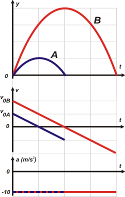

|  |
|
Acá lo tenés todo. ¿Cuál es la clave? La clave es que ambos tienen la misma aceleración (para el caso del SR elegido, g = -10 m/s²). pero si tienen la misma aceleración sus gráficas de velocidad-tiempo tienen que tener la misma pendiente. Las dos rectas son paralelas.
De modo que por semejanza de triángulos (o por teorema de Thales, o por simple intuición) razonás que el tiempo que tarde A en alcanzar la altura máxima es la mitad del tiempo que tarde B en alcanzar su altura máxima.
Y si ahora analizás las áreas encerradas bajos las curvas de cada uno velocidad-tiempo, encontrás también muy fácilmente que el área encerrada por la velocidad de A es la cuarta parte de la encerrada por la velocidad de B. De modo que la altura máxima de B es el cuádruple de la altura máxima de A.
También se ven claramente otras relaciones entre ambos tiros. Quedan para vos. |